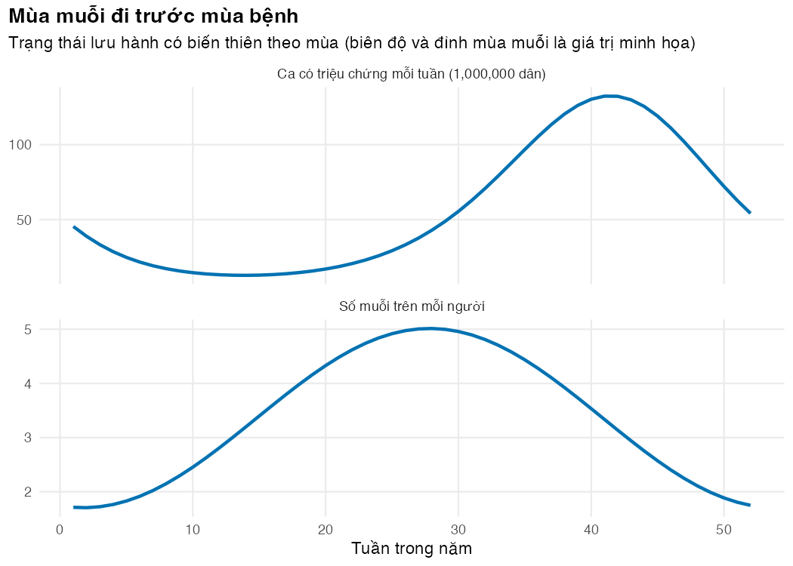
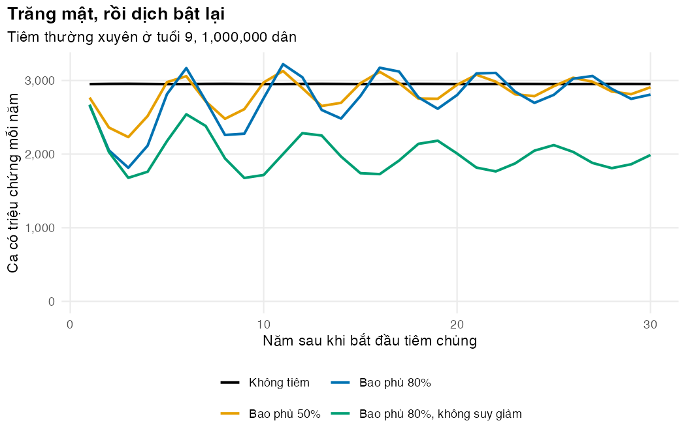

Bài 4: Mô hình vật chủ–véc tơ cho sốt xuất huyết Dengue
Thêm muỗi, mùa và vắc xin vào mô hình, rồi tính số ca, ca nhập viện và ca tử vong tránh được
Vì sao bạn nên quan tâm?
Giữa mùa mưa, bạn là bác sĩ khoa Truyền nhiễm của một bệnh viện tỉnh và phải kê thêm giường ra hành lang. Cả nước báo cáo 172,000 ca sốt xuất huyết năm 2023, 136,307 ca năm 2024 (đến 17/12) và 190,040 ca năm 2025 (VOV 2024; Bộ Y tế 2024a; Báo Pháp luật Việt Nam 2026); nửa đầu năm 2022, khoảng 74% ca được báo cáo phải nhập viện (VietTimes 2022). Một ca nằm viện 5.4 ngày (Recker và c.s. 2024) tốn khoảng 2,227,820 VNĐ theo giá BHYT, bằng 9 ngày lương tối thiểu vùng I (Bộ Y tế 2024b; Chính phủ 2025). Trước khi bàn ngân sách cho vắc xin, phải ước được chương trình tránh bao nhiêu ca, ca nhập viện và ca tử vong. Bài này dựng mô hình người–muỗi để làm việc đó.
Mục tiêu học tập
Sau bài này, bạn có thể:
Viết và giải một mô hình vật chủ–véc tơ (host–vector model) kiểu Ross–Macdonald: người SEIR hai nhóm tuổi, muỗi SEI.
Tính R0 theo hai quy ước (Ross–Macdonald và ma trận thế hệ kế tiếp) và biết dùng quy ước nào cho ngưỡng miễn dịch cộng đồng (herd immunity threshold).
Thêm seasonal forcing (biến thiên lây truyền theo mùa) vào số muỗi và kiểm tra bằng lời giải giải tích.
Chuyển tham số thử nghiệm vắc xin thành tham số mô hình: hiệu lực lúc tiêm và tốc độ suy giảm bảo vệ.
Mô phỏng kịch bản tiêm chủng, tính số ca tránh được và thẩm định ngoại (external validation) mô hình một cách thô.
Ý chính
Sốt xuất huyết Dengue (SXHD) lây qua muỗi Aedes; muỗi chỉ lây sau thời gian ủ bệnh ngoại lai (extrinsic incubation period, EIP) và nhiều con chết trước đó. Lực lây nhiễm lên người phụ thuộc muỗi nhiễm, lên muỗi phụ thuộc người nhiễm: hai vòng phản hồi nối nhau.
R0 kiểu Ross–Macdonald đo một vòng đầy đủ người → muỗi → người; NGM cho căn bậc hai của nó. Ngưỡng \(1 - 1/R_0\) dùng R0 dạng Ross–Macdonald.
Mật độ muỗi theo mùa làm số ca có tính mùa; đỉnh ca bệnh đến sau đỉnh muỗi vài tháng.
Hiệu lực vắc xin giảm theo thời gian. Hai mốc hiệu lực trung bình của thử nghiệm cho hai phương trình, đủ để suy ra cả hiệu lực lúc tiêm \(E_0\) lẫn tốc độ suy giảm \(\omega\).
Sau khi tiêm, số ca giảm vài năm rồi bật lại; bảo vệ suy giảm làm lợi ích dài hạn nhỏ đi nhiều.
Mô hình một type huyết thanh cho số ca đến cơ sở y tế gần số ca Bộ Y tế báo cáo, nhưng bị chặn trên về số ca có triệu chứng nên thấp hơn nhiều ước tính gánh nặng có hiệu chỉnh báo cáo thiếu; số liệu vắc xin lại đến từ thử nghiệm ở nước khác và đo bệnh, không đo nhiễm. Cả hai giả định phải nêu rõ.
Nội dung
SXHD ở Việt Nam và một mô hình đủ đơn giản
SXHD là gánh nặng lớn ở Việt Nam. Ba năm gần đây, Bộ Y tế báo cáo từ 136,307 đến 190,040 ca và từ 24 đến 43 ca tử vong mỗi năm (VOV 2024; Bộ Y tế 2024a; Báo Pháp luật Việt Nam 2026; Herriman 2026). Đó là số được báo cáo. Số ca có triệu chứng thật cao hơn nhiều và ước tính khác nhau tùy cách điều chỉnh cho báo cáo thiếu (underreporting); giám sát chủ động trong một thử nghiệm vắc xin ở năm nước Đông Nam Á, trong đó có Việt Nam, cho thấy báo cáo thường quy bỏ sót nhiều ca (Nealon và c.s. 2016). Trong số ca được báo cáo, phần lớn nằm viện: khoảng 74% trên cả nước (nửa đầu năm 2022) và 54% trong một tuần cao điểm ở TP.HCM cùng năm (VietTimes 2022; Báo Sài Gòn Giải Phóng 2022), dù hướng dẫn của Bộ Y tế cho rằng đa số ca bệnh có thể điều trị ngoại trú (Sở Y tế Hải Phòng 2024). Mô hình dùng hai mức này như dữ liệu, và gọi ca đến cơ sở y tế là ca “được báo cáo”. Số ca tăng trong mùa mưa, đạt đỉnh khoảng tháng 6 đến tháng 10 (Hung và c.s. 2018; Lee và c.s. 2017); ở Hà Nội dịch thường bùng vào tháng 10 đến tháng 12 (VOV 2024). Trên toàn cầu, chỉ khoảng một phần tư số ca nhiễm có triệu chứng (Bhatt và c.s. 2013), nhưng người nhiễm không triệu chứng vẫn lây được cho muỗi (Duong và c.s. 2015). Vì vậy mô hình cho mọi ca nhiễm cùng khả năng lây trong 5 ngày (giá trị minh họa; trong thực tế khả năng lây cho muỗi giảm dần theo ngày bệnh (Nguyet và c.s. 2013)), và chỉ tách ca có triệu chứng khi tính kết quả sức khỏe.
Virus Dengue có bốn type huyết thanh (serotype). Nhiễm một type tạo miễn dịch với type đó nhưng chỉ bảo vệ chéo ngắn hạn, khoảng 1–3 năm, với các type khác (Reich và c.s. 2013); ở miền Nam Việt Nam, người ta đã phân tích cả nhiễm lần một lẫn lần hai (Thai và c.s. 2011). Mô hình ở bài này gộp bốn type thành một tác nhân “giống Dengue”, miễn dịch suốt đời sau một lần nhiễm. Cách gộp này giữ được cơ chế lây qua muỗi, mùa và hiệu quả gián tiếp, nhưng bỏ qua nhiễm lần hai (thường nặng hơn) và cách vắc xin tác động khác nhau theo tình trạng huyết thanh (Ferguson và c.s. 2016; Flasche và c.s. 2016).
Mô hình Ross–Macdonald
flowchart LR subgraph H["Người (hai nhóm tuổi; nhóm 1 gồm k ngăn tuổi, xem trang module)"] S["S"] -->|"λh = a·b·Iv/Nh"| E["E"] -->|"σh"| I["I"] -->|"γ"| R["R"] V["V (đã tiêm, được bảo vệ)"] -->|"ω: suy giảm"| S end subgraph M["Muỗi"] Sv["Sv"] -->|"λv = a·c·I/Nh"| Ev["Ev"] -->|"σv"| Iv["Iv"] N(("Muỗi mới: g·m·Nh·(1 + A cos ...)")) --> Sv end Iv -.-> S I -.-> Sv
flowchart LR
subgraph H["Người (hai nhóm tuổi; nhóm 1 gồm k ngăn tuổi, xem trang module)"]
S["S"] -->|"λh = a·b·Iv/Nh"| E["E"] -->|"σh"| I["I"] -->|"γ"| R["R"]
V["V (đã tiêm, được bảo vệ)"] -->|"ω: suy giảm"| S
end
subgraph M["Muỗi"]
Sv["Sv"] -->|"λv = a·c·I/Nh"| Ev["Ev"] -->|"σv"| Iv["Iv"]
N(("Muỗi mới: g·m·Nh·(1 + A cos ...)")) --> Sv
end
Iv -.-> S
I -.-> Sv
Các mô hình “Ross–Macdonald” có chung một bộ giả định: muỗi đốt ngẫu nhiên, mỗi muỗi đốt \(a\) lần mỗi ngày, muỗi chết với tỷ suất \(g\) không đổi, và mật độ muỗi trên người là \(m\)(Smith và c.s. 2012). Ở một làng tại Thái Lan, mỗi muỗi Aedes aegypti cái hút máu người khoảng 0.76 lần mỗi ngày (Scott và c.s. 2000); ta dùng con số này cho \(a\). Lực lây nhiễm lên người là \(\lambda_h = a\,b\,I_v/N_h\) (\(b\): xác suất muỗi lây sang người mỗi lần đốt); lên muỗi là \(\lambda_v = a\,c\,I_h/N_h\). Người có thời gian ủ bệnh nội tại (intrinsic incubation period, IIP) trung bình 5.9 ngày; trong mô hình, đây cũng là độ dài của ngăn E. Trong muỗi, EIP trung bình 15 ngày ở 25 °C và ngắn hơn nhiều khi trời nóng (Chan và Johansson 2012). Tuổi thọ muỗi (10 ngày, giá trị minh họa) cũng phụ thuộc nhiệt độ (Brady và c.s. 2013). Vì ngăn E dài đúng bằng IIP, người nhiễm chỉ lây sau khi có triệu chứng; thực tế người chưa có triệu chứng đã lây được cho muỗi (Duong và c.s. 2015), một giới hạn của mô hình.
R0 của một vòng đầy đủ là
\[
R_0 = \underbrace{\frac{a\,b}{g}\cdot\frac{\sigma_v}{\sigma_v+g}}_{\text{người mới nhiễm do một muỗi mới nhiễm}}\;\times\;\underbrace{\frac{m\,a\,c}{\gamma+\mu}\cdot\frac{\sigma_h}{\sigma_h+\mu}}_{\text{muỗi mới nhiễm do một người mới nhiễm}} .
\]
Thừa số \(\sigma_v/(\sigma_v + g)\) là xác suất muỗi sống qua EIP. Vì \(a\) xuất hiện hai lần trong R0, và \(g\) xuất hiện hai lần trong thừa số thứ nhất, diệt muỗi trưởng thành có tác dụng rất mạnh. Ở mô hình này số muỗi mới mỗi ngày là \(g\,m\,N_h\), nên \(m\) giữ cố định khi \(g\) đổi; nếu giữ cố định số muỗi mới thì \(m \propto 1/g\) và R0 còn nhạy với \(g\) hơn nữa. NGM tính “một thế hệ” là một bước người → muỗi hoặc muỗi → người, nên giá trị riêng lớn nhất của nó bằng \(\sqrt{R_0}\). R0 dạng Ross–Macdonald của bài là 9.7. Con số này không đo trực tiếp mà suy ra từ lực lây nhiễm huyết thanh học ở Bình Thuận (\(\lambda\) = 0.117 mỗi năm (Thai và c.s. 2011)) bằng công thức của Bài 2, \(R_0 \approx 1 + \lambda L\) với \(L\) = 74.3 năm. Mật độ muỗi \(m\) được suy ngược từ R0, nên phụ thuộc các giá trị \(b, c, g\) còn là minh họa và không so được với chỉ số côn trùng học.
Số muỗi mới trưởng thành mỗi ngày là \(g\,m\,N_h\,[1 + A\cos(2\pi(t - t_{\text{peak}})/365)]\), với biên độ \(A =\) 0.5 và đỉnh vào ngày thứ 182 trong năm (giá trị minh họa). Đây là cách đơn giản nhất để đưa mùa vào mô hình (Altizer và c.s. 2006).
Nhóm trẻ từ 0 đến 9 tuổi gồm 9 ngăn tuổi nối tiếp như ở Bài 3, để tuổi tiêm tập trung quanh 9 tuổi.
Vắc xin: từ thử nghiệm đến tham số mô hình
TAK-003 tiêm 2 liều cách nhau ba tháng (Biswal và c.s. 2020); WHO-SAGE khuyến cáo xem xét dùng cho người từ 6 đến 16 tuổi ở nơi lây truyền cao (Sáez-Llorens và c.s. 2025). Hiệu lực chống SXHD có xác nhận virus (virologically confirmed dengue) là 80.2% trung bình trong khoảng một năm đầu (Biswal và c.s. 2020), giảm từ năm thứ hai (López-Medina và c.s. 2022), và hiệu lực tích lũy sau khoảng 4.5 năm là 61.2% (Tricou và c.s. 2024). Hai thử nghiệm này chạy ở tám nước châu Á và Mỹ Latinh, không có địa điểm nào ở Việt Nam, và do nhà sản xuất tài trợ (Biswal và c.s. 2020; Tricou và c.s. 2024). Mô hình dùng vắc xin tất cả hoặc không (all-or-nothing), bảo vệ giảm theo hàm mũ \(E(t) = E_0 e^{-\omega t}\).
Hai mốc trên là hiệu lực trung bình trên hai khoảng thời gian tính từ lúc tiêm, nên hiệu lực lúc tiêm \(E_0\) cao hơn mốc đầu. Với \(T_1\) bằng khoảng một năm và \(T_2\) bằng thời gian theo dõi:
Hai phương trình, hai ẩn \((E_0, \omega)\): chia vế cho vế để tìm \(\omega\) bằng uniroot(), rồi suy ra \(E_0\). Cách đơn giản hơn là đặt \(E_0\) bằng hiệu lực năm đầu và chỉ khớp \(\omega\); ta giữ cách đó làm kịch bản độ nhạy (Bài 5). Hai giả định cần nói rõ: hiệu lực tích lũy được coi là bảo vệ trung bình theo thời gian, chỉ đúng khi tỷ lệ tấn công thấp; và hai mốc được tính từ cùng một gốc thời gian (lúc tiêm), trong khi khoảng đầu thực ra bắt đầu 30 ngày sau liều hai và khoảng tích lũy bắt đầu từ liều một. Ngoài ra thử nghiệm đo hiệu lực chống bệnh, còn mô hình dùng nó như hiệu lực chống nhiễm, một bất định mà Flasche và cộng sự cũng nêu (Flasche và c.s. 2016).
Thực hành
Phần này chạy code/l04-dengue-host-vector.R. Đoạn đầu chỉ nạp tham số và chuyển chúng thành tỷ suất theo ngày bằng dengue_inputs(), nơi duy nhất biến đổi tham số.
if (!isTRUE(l10n_info()[["UTF-8"]])) invisible(Sys.setlocale("LC_CTYPE", "en_US.UTF-8"))source("../_shared/R/helpers.R")source("../_shared/R/vn_data.R")source("code/model.R")library(ggplot2)p <-m05_params() # params/dengue.csv + shared valuesptab <-attr(p, "table")low_of <-function(nm) ptab$low[ptab$name == nm] # lower bound of a parameterinp <-dengue_inputs(p)
Đoạn sau tính \(m\) cho R0 mục tiêu và kiểm tra R0. Dòng R0 Ross–Macdonald bằng 9.7 đúng theo cách xây dựng (vì \(m\) được suy ra từ R0). Hai phép kiểm tra thật nằm ở NGM: nó phải bằng căn bậc hai của R0, và phải tăng gấp đôi khi gấp đôi tỷ lệ đốt (vì R0 tỷ lệ với \(a^2\)). Dòng cuối kiểm tra R0 trong bảng tham số khớp \(1 + \lambda L\) tính từ huyết thanh học và bảng sống dùng chung.
# Mosquitoes per person (m) needed for the target R0, and checks of R0.per_m <-r0_per_m(inp$bite, inp$b, inp$c, inp$g, inp$sigma_v, inp$gamma, inp$sigma_h, inp$mu)r0_rm <- inp$m * per_m # equals p$r0 by construction, because m was solved from r0r0_ngm <-spectral_radius(dengue_ngm(inp))# Independent check 1: the NGM built from the ODE structure must give sqrt(R0) of Ross-Macdonaldstopifnot(abs(r0_ngm -sqrt(p$r0)) <1e-8)# Independent check 2: R0 is proportional to bite^2, so the NGM eigenvalue is proportional to# bite. Doubling the bite rate (same mosquito density m) must double it.inp_bite2 <- inpinp_bite2$bite <-2* inp$bitestopifnot(abs(spectral_radius(dengue_ngm(inp_bite2)) / r0_ngm -2) <1e-8)# Where R0 comes from: lambda = (R0 - 1) / L (Lesson 2) with the Binh Thuan serological force of# infection and the shared life expectancy. The CSV value must match this within rounding.r0_from_foi <-1+ p$val_foi_binhthuan * p$life_expstopifnot(abs(p$r0 - r0_from_foi) <0.1)round(c(mosquitoes_per_person = inp$m,survive_eip = inp$sigma_v / (inp$sigma_v + inp$g),R0_ross_macdonald = r0_rm, R0_ngm = r0_ngm, R0_from_foi = r0_from_foi), 3)
Chỉ 40% số muỗi bị nhiễm sống qua EIP, nên cần khoảng 3.4 muỗi trên mỗi người để đạt R0 này. Tiếp theo, chạy 150 năm không tiêm chủng. Kiểm tra: dân số người không đổi, và số ca nhiễm mỗi năm gần như không đổi (trạng thái lưu hành theo mùa đã ổn định).
# Run burnin_years without vaccination to reach the seasonal endemic statey0 <-dengue_burnin(inp, p$burnin_years)inp0 <-dengue_inputs(p, coverage =0)base <-dengue_run(inp0, y0, p$scenario_years) # scenario_years, daily outputsp9 <-unname(sp_last_stage(y0, inp$k)) # ever infected, children in the last age stageann_base <-annual_totals(base)inf_base <- ann_base$infections_1 + ann_base$infections_2# Checks: humans conserved; endemic state is stable (annual infections vary < 1%)stopifnot(max(abs(base$Nh - p$n_h)) <1e-3, diff(range(inf_base)) /mean(inf_base) <0.01)round(c(SP9 = sp9, infections_per_year =mean(inf_base),symptomatic_per_year = p$p_sympt *mean(inf_base)), 3)
Ở trạng thái lưu hành của mô hình, 61.5% trẻ ở ngăn tuổi cuối (khoảng 8–9 tuổi) đã từng nhiễm, và mỗi năm có khoảng 12,003 ca nhiễm trên một triệu dân. Theo phân loại của Flasche và cộng sự, SP9 này ở mức trung bình đến cao (từ 50% đến dưới 70%) (Flasche và c.s. 2016); đó là đặc trưng của mô hình (R0 suy từ huyết thanh học ở Bình Thuận), không chứng minh một địa phương cụ thể đủ điều kiện “lây truyền cao” của khuyến cáo. Vì mỗi người chỉ nhiễm một lần, số ca nhiễm mỗi năm xấp xỉ số trẻ sinh ra.
Đoạn sau xem một năm ở trạng thái lưu hành. Kiểm tra: số muỗi trong mô hình khớp lời giải giải tích của phương trình \(dN_v/dt = \text{số muỗi mới} - g N_v\) (hàm mosquito_periodic()).
# One year of the endemic state: weekly symptomatic cases and mosquitoes per personyr1 <- base[base$time <= DAYS_PER_YEAR, ]# Mosquito numbers follow the closed-form periodic solution (independent of infection)stopifnot(max(abs(yr1$Nv /mosquito_periodic(yr1$time, inp) -1)) <1e-4)daily_sympt <- p$p_sympt *diff(yr1$C1 + yr1$C2) # days 1..365week <-ceiling(seq_len(364) /7) # 52 full weeksweekly <-tapply(daily_sympt[1:364], week, sum)peak_day_cases <- yr1$time[-1][which.max(daily_sympt)]peak_day_mosq <- yr1$time[which.max(yr1$Nv)]month_vi <-function(day) as.integer(format(as.Date("2025-01-01") + day, "%m"))c(peak_month_mosquitoes =month_vi(peak_day_mosq), peak_month_cases =month_vi(peak_day_cases),lag_days = peak_day_cases - peak_day_mosq)
# The mosquito peak is an illustrative value; the case peak it produces must still fall in the# reported dengue season (June-November) and after the mosquito peakstopifnot(month_vi(peak_day_cases) %in%6:11, peak_day_cases > peak_day_mosq)
Đoạn sau vẽ số ca có triệu chứng mỗi tuần và số muỗi trên mỗi người trong cùng một năm. Kiểm tra: đỉnh muỗi (tháng 7) đến trước đỉnh ca bệnh, và đỉnh ca bệnh rơi vào mùa dịch được báo cáo (tháng 6–11; script dừng nếu không).
season_df <-rbind(data.frame(week =as.integer(names(weekly)), value =as.vector(weekly),panel =paste0("Ca có triệu chứng mỗi tuần (", fmt_num(p$n_h), " dân)")),data.frame(week =as.integer(names(weekly)),value =as.vector(tapply(yr1$Nv[2:365] / p$n_h, week, mean)),panel ="Số muỗi trên mỗi người"))season_df$panel <-factor(season_df$panel, levels =unique(season_df$panel))fig_season <-ggplot(season_df, aes(week, value)) +geom_line(colour = pal_course[1], linewidth =1) +facet_wrap(~panel, ncol =1, scales ="free_y") +scale_y_continuous(labels =function(x) fmt_num(x)) +labs(x ="Tuần trong năm", y =NULL,title ="Mùa muỗi đi trước mùa bệnh",subtitle ="Trạng thái lưu hành có biến thiên theo mùa (biên độ và đỉnh mùa muỗi là giá trị minh họa)") +theme_course()save_fig(fig_season, "l04-season.png", width =7, height =5)

Figure 31.1: Số muỗi đạt đỉnh tháng 7, số ca có triệu chứng đạt đỉnh vài tháng sau.
Số ca đạt đỉnh vào tháng 10, chậm hơn đỉnh muỗi 95 ngày: cần thời gian để muỗi nhiễm, qua EIP, rồi lây sang người, và để số người nhiễm tích lũy.
Trước khi dùng mô hình, so nó với dữ liệu. Đoạn sau làm ba phép so thô, trên 100,000 dân mỗi năm: (1) số ca đến cơ sở y tế của mô hình với số ca Bộ Y tế báo cáo 2023–2025 (dùng dân số năm 2025 cho cả ba năm (Cục Thống kê (Bộ Tài chính) 2026)); (2) số ca có triệu chứng và số năm sống điều chỉnh theo bệnh tật (DALY, không chiết khấu) với ước tính gánh nặng có hiệu chỉnh báo cáo thiếu cho năm 2013 (Hung và c.s. 2018; World Bank 2026); (3) lực lây nhiễm và SP9 với huyết thanh học ở Bình Thuận (Thai và c.s. 2011).
# Crude external check 1: cases that reach a health facility in the model vs cases reported# by the Ministry of Health in 2023-2025, per 100,000 people per year (2025 population for all# three years: an approximation).flows0 <-dengue_flows(base, p, disc_rate =0)yr1_flows <- flows0[flows0$day <= DAYS_PER_YEAR, ]rep_cases <-c(p$rep_cases_2023, p$rep_cases_2024, p$rep_cases_2025)rep_tab <-data.frame(source =c("model_attended", "reported_2023", "reported_2024", "reported_2025"),per_100000 =c(sum(yr1_flows$attended) / p$n_h, rep_cases / p$population) *1e5)rep_tab$per_100000 <-round(rep_tab$per_100000, 1)rep_tab
# Why is the model so low? With ONE lifetime infection per person, symptomatic incidence cannot# exceed (births per person-year) x (share symptomatic). With up to four infections per person# (one per serotype) the ceiling is four times higher. Per 100,000 people per year:ceiling_one <- p$p_sympt / p$life_exp *1e5ceiling_four <-4* ceiling_onestopifnot(val_tab$model[1] <= ceiling_one) # the model respects its own structural ceilinground(c(model = val_tab$model[1], ceiling_one_infection = ceiling_one,ceiling_four_infections = ceiling_four, burden_estimate = val_tab$estimate[1]), 0)
model ceiling_one_infection ceiling_four_infections
295 331 1324
burden_estimate
2500
# Force of infection: model (mean over one year, per year) vs the Binh Thuan serological estimatefoi_model <-mean(base$foi_h[1:DAYS_PER_YEAR]) * DAYS_PER_YEARsp9_bt <-1-exp(-p$age_vacc * p$val_foi_binhthuan) # SP9 implied by the Binh Thuan force of infectiongap_vs_four <- val_tab$estimate[1] / ceiling_four # how far the burden estimate is above even that ceilinground(c(foi_model = foi_model, foi_binh_thuan = p$val_foi_binhthuan,SP9_model = sp9, SP9_if_binh_thuan_foi = sp9_bt, estimate_over_four_infection_ceiling = gap_vs_four), 3)
Mô hình cho 195 ca đến cơ sở y tế trên 100,000 dân mỗi năm, trong khi số được báo cáo dao động từ 133 đến 186: mô hình cao hơn 20% so với trung bình ba năm, đủ gần cho một mô hình chưa hiệu chuẩn. Nhưng số ca có triệu chứng (295) thấp hơn cả ước tính cũ (489) lẫn ước tính theo phương pháp GBD (2,500), vốn hiệu chỉnh cho ca không được báo cáo. Cấu trúc một type huyết thanh giải thích một phần: mỗi người nhiễm một lần nên số ca có triệu chứng không thể vượt tỷ lệ có triệu chứng chia cho tuổi thọ, tức 331 ca trên 100,000 dân mỗi năm. Ngay cả khi mỗi người nhiễm tới bốn lần, trần cũng chỉ là 1,324, và ước tính GBD vẫn cao gấp 1.9 lần trần đó; phần còn lại có thể đến từ tỷ lệ có triệu chứng (một tỷ số toàn cầu) và hệ số điều chỉnh báo cáo thiếu (Hung và c.s. 2018). M08 xử lý chuyện này bằng hiệu chuẩn. Về lây truyền, lực lây nhiễm trung bình của mô hình là 0.111 mỗi năm, so với 0.117 ở Bình Thuận (SP9 suy ra là 65%, so với 61% của mô hình). Vì R0 được suy ra từ chính ước tính này, đây là kiểm tra tính nhất quán chứ không phải thẩm định độc lập. Kết luận: mô hình tái tạo được số ca được báo cáo nhưng đánh giá thấp gánh nặng thật; nhớ điều này khi đọc ICER ở Bài 5.
Tiếp theo, đoạn l04-waning giải hai phương trình ở trên cho hai cách khớp: hai mốc (chính) và một tham số (độ nhạy). Kiểm tra: cách thứ nhất phải tái tạo cả hai hiệu lực trung bình của thử nghiệm, cách thứ hai chỉ tái tạo mốc 4.5 năm.
# From two trial averages to (E0, omega): a joint fit (main) and the one-parameter fit (sensitivity)fit_joint <-waning_fit(p$ve_initial, p$ve_cum, p$ve_initial_years, p$ve_followup_years, "joint")fit_single <-waning_fit(p$ve_initial, p$ve_cum, p$ve_initial_years, p$ve_followup_years, "single")# Check: the joint fit reproduces BOTH trial averages; the one-parameter fit reproduces only the secondavg_of <-function(fit, years) fit[["e0"]] *mean_protection(fit[["omega"]], years)stopifnot(abs(avg_of(fit_joint, p$ve_initial_years) - p$ve_initial) <1e-9,abs(avg_of(fit_joint, p$ve_followup_years) - p$ve_cum) <1e-9,abs(avg_of(fit_single, p$ve_followup_years) - p$ve_cum) <1e-9)fit_tab <-data.frame(fit =c("Hai mốc (chính)", "Một tham số (độ nhạy)"),e0 =c(fit_joint[["e0"]], fit_single[["e0"]]),omega_per_year =c(fit_joint[["omega"]], fit_single[["omega"]]),mean_duration_years =1/c(fit_joint[["omega"]], fit_single[["omega"]]),protected_years_per_vaccinee =c(fit_joint[["e0"]] / fit_joint[["omega"]], fit_single[["e0"]] / fit_single[["omega"]]),average_first_year =c(avg_of(fit_joint, p$ve_initial_years), avg_of(fit_single, p$ve_initial_years)),average_4.5_years =c(avg_of(fit_joint, p$ve_followup_years), avg_of(fit_single, p$ve_followup_years)))fit_tab[, -1] <-round(fit_tab[, -1], 3)fit_tab
fit e0 omega_per_year mean_duration_years
1 Hai mốc (chính) 0.871 0.167 5.979
2 Một tham số (độ nhạy) 0.802 0.126 7.929
protected_years_per_vaccinee average_first_year average_4.5_years
1 5.207 0.802 0.612
2 6.359 0.753 0.612
Cách khớp hai mốc cho \(E_0 =\) 87.1% và \(\omega =\) 0.167 mỗi năm (bảo vệ kéo dài trung bình 6.0 năm). Cách một tham số cho \(\omega =\) 0.126 (7.9 năm), nhưng bảo vệ trung bình năm đầu chỉ còn 75.3% thay vì 80.2%: không còn khớp mốc thứ nhất. Mỗi trẻ cảm nhiễm được tiêm có 5.2 năm được bảo vệ theo cách thứ nhất, 6.4 năm theo cách thứ hai.
Bây giờ là các kịch bản tiêm chủng ở tuổi 9: không tiêm, bao phủ 50% và 80% (bảo vệ suy giảm), và 80% với bảo vệ suốt đời ở hiệu lực năm đầu để thấy vai trò của suy giảm. Kịch bản “không tiêm” chính là lần chạy nền ở trên. Mỗi kịch bản chạy 30 năm.
# Four scenarios over scenario_years: no vaccination; routine vaccination at age 9 with low# or base coverage (waning protection); base coverage with lifelong protection (first-year efficacy)cov_low <-low_of("coverage")lab <-function(x) paste0("Bao phủ ", fmt_pct(x, 0))scen <-list(inp0, dengue_inputs(p, coverage = cov_low), inp, dengue_inputs(p, waning =FALSE))names(scen) <-c("Không tiêm", lab(cov_low), lab(p$coverage),paste0(lab(p$coverage), ", không suy giảm"))runs <-c(list(base), lapply(scen[-1], function(x) dengue_run(x, y0, p$scenario_years)))names(runs) <-names(scen) # the "no vaccination" run is the baseline run aboveann_df <-NULLfor (s innames(runs)) { a <-annual_totals(runs[[s]]) ann_df <-rbind(ann_df, data.frame(year = a$year, scenario = s,symptomatic = p$p_sympt * (a$infections_1 + a$infections_2)))}ann_df$scenario <-factor(ann_df$scenario, levels =names(runs))round(c(omega_per_year = inp$omega_year, mean_protection_years =1/ inp$omega_year), 3)
omega_per_year mean_protection_years
0.167 5.979
# Does the base programme fall below, then rebound ABOVE the no-vaccination level in some year?base_level <-mean(ann_df$symptomatic[ann_df$scenario =="Không tiêm"])prog_years <- ann_df$symptomatic[ann_df$scenario ==lab(p$coverage)]c(min_vs_base =min(prog_years) / base_level, max_vs_base =max(prog_years) / base_level,years_above_base =sum(prog_years > base_level))
Đoạn sau vẽ số ca có triệu chứng mỗi năm của bốn kịch bản. Kiểm tra: đường “không tiêm” gần như phẳng, các đường còn lại giảm mạnh rồi bật lên.
fig_scen <-ggplot(ann_df, aes(year, symptomatic, colour = scenario)) +geom_line(linewidth =0.9) +scale_colour_manual(values = pal_course[c(8, 4, 1, 3)], name =NULL) +scale_y_continuous(labels =function(x) fmt_num(x), limits =c(0, NA)) +labs(x ="Năm sau khi bắt đầu tiêm chủng", y ="Ca có triệu chứng mỗi năm",title ="Trăng mật, rồi dịch bật lại",subtitle =paste0("Tiêm thường xuyên ở tuổi ", p$age_vacc, ", ", fmt_num(p$n_h)," dân")) +theme_course() +guides(colour =guide_legend(nrow =2))save_fig(fig_scen, "l04-scenarios.png", width =7, height =4.5)

Figure 31.2: Số ca có triệu chứng mỗi năm theo kịch bản tiêm chủng, một triệu dân.
Với bao phủ 80%, số ca có triệu chứng giảm xuống còn 61% mức không tiêm ở năm thứ 3, rồi bật lên, có 9 năm vượt cả mức không tiêm (cao nhất 109%). Nguyên nhân là người cảm nhiễm tích lũy khi lây truyền thấp và khi bảo vệ của vắc xin suy giảm. Cuối cùng, tính số ca, ca nhập viện và ca tử vong tránh được trong 20 năm (khung thời gian cơ sở). Kiểm tra: đọc từng hàng, mọi giá trị tránh được nên dương nếu vắc xin có tác dụng.
# Cases, hospitalisations and deaths averted over the base horizon (undiscounted counts)h_report <- p$horizon_yearstot <-lapply(runs, function(r) dengue_totals(dengue_flows(r, p), h_report))averted <-NULLfor (s innames(runs)[-1]) { averted <-rbind(averted, data.frame(scenario = s, vaccinated = tot[[s]][["vaccinated"]],cases = tot[[1]][["symptomatic"]] - tot[[s]][["symptomatic"]],hospital = tot[[1]][["hospital"]] - tot[[s]][["hospital"]],deaths = tot[[1]][["deaths"]] - tot[[s]][["deaths"]]))}averted$cases_per_1000_vacc <-1000* averted$cases / averted$vaccinatedaverted[, -1] <-round(averted[, -1], 1)averted # read it: every row should be positive if vaccination helps
scenario vaccinated cases hospital deaths
1 Bao phủ 50% 119317.5 3493.4 1706.2 0.5
2 Bao phủ 80% 190908.0 5783.1 2824.4 0.8
3 Bao phủ 80%, không suy giảm 190908.0 18265.5 8920.9 2.7
cases_per_1000_vacc
1 29.3
2 30.3
3 95.7
Với bao phủ 80%, chương trình tránh được 5,783 ca có triệu chứng, 2,824 ca nhập viện và 0.8 ca tử vong trong 20 năm trên một triệu dân. Nhân lên cho 102.3 triệu dân, đó là khoảng 289,000 ca nhập viện và 82 ca tử vong tránh được trong 20 năm, tức khoảng 4 ca tử vong mỗi năm, so với 43 ca tử vong được báo cáo năm 2025. Nếu bảo vệ kéo dài suốt đời, số ca tránh được tăng lên 18,266. Tham số suy giảm vì thế là một trong những tham số quan trọng nhất cho phân tích độ nhạy (M03).
Mẹo thực hành
Suy ngược mật độ muỗi từ R0 (hoặc từ tỷ lệ huyết thanh dương tính theo tuổi) thay vì nhập một con số \(m\) không có nguồn: một dạng hiệu chuẩn (calibration) đơn giản; M08 làm bài bản.
Chạy đủ lâu trước khi can thiệp, rồi kiểm tra số ca mỗi năm đã ổn định.
Kiểm tra từng khối riêng rẽ: muỗi có lời giải giải tích, dân số người bảo toàn, NGM bằng căn bậc hai của R0 và tăng đúng theo tỷ lệ đốt.
Lỗi thường gặp
Dùng R0 từ NGM trong công thức \(1 - 1/R_0\). Với bệnh lây qua véc tơ truyền bệnh, NGM cho căn bậc hai của R0 dạng Ross–Macdonald; dùng nhầm sẽ đánh giá thấp nhiều tỷ lệ miễn dịch cần đạt.
Quên rằng muỗi phải sống qua EIP. Bỏ thừa số \(\sigma_v/(\sigma_v + g)\) làm R0 cao hơn nhiều so với thực tế với cùng mật độ muỗi.
Coi hiệu lực trung bình của một khoảng thời gian là hiệu lực lúc tiêm, hoặc lấy hiệu lực của năm đầu cho cả khung thời gian. Hiệu lực TAK-003 giảm theo thời gian; giữ 80.2% suốt đời sẽ phóng đại lợi ích.
Bài tập
(Dễ) Tắt biến thiên theo mùa (biên độ bằng 0). Tỷ lệ trẻ đã nhiễm ở ngăn tuổi cuối có đổi không? Vì sao?
(Trung bình) Ở 30 °C, EIP trung bình chỉ còn 6.5 ngày (Chan và Johansson 2012). Giữ nguyên mật độ muỗi, R0 mới là bao nhiêu?
(Trung bình) Với tốc độ suy giảm đã suy ra, bao nhiêu phần trăm trẻ cảm nhiễm được tiêm còn được bảo vệ sau 1, 5 và 10 năm kể từ khi tiêm?
Lời giải
Bài 1. Gần như không đổi: mùa làm số ca dồn vào vài tháng, nhưng mức lây truyền trung bình cả năm vẫn do R0 quyết định.
Tỷ lệ trẻ đã nhiễm là 61.5% khi có mùa và 62.6% khi không có mùa.
Bài 2. R0 tăng mạnh vì nhiều muỗi sống qua EIP hơn. Đây là một lý do khí hậu ảnh hưởng nhiều đến SXHD.
# Exercise 2: hotter weather (30 °C) shortens the EIP. Keeping the same mosquito density,# what is the new R0?eip_hot <- p$eip_days_30cr0_hot <- inp$m *r0_per_m(inp$bite, inp$b, inp$c, inp$g, 1/ eip_hot, inp$gamma, inp$sigma_h, inp$mu)round(c(R0_25C = p$r0, R0_30C = r0_hot), 2)
R0_25C R0_30C
9.7 14.7
Bài 3. Bảo vệ giảm theo hàm mũ từ \(E_0\); sau vài năm tỷ lệ được bảo vệ giảm nhanh.
# Exercise 3: share of vaccinated (initially susceptible) children still protected# 1, 5 and 10 years after vaccinationyears_after <-c(1, 5, 10)setNames(round(inp$eff *exp(-inp$omega_year * years_after), 3), paste0("year_", years_after))
year_1 year_5 year_10
0.737 0.377 0.164
Sau 10 năm chỉ còn 16% trẻ cảm nhiễm được tiêm còn được bảo vệ, so với 74% sau 1 năm.
Tài liệu tham khảo
Altizer, Sonia, Andrew Dobson, Parviez Hosseini, Peter Hudson, Mercedes Pascual, và Pejman Rohani. 2006. “Seasonality and the dynamics of infectious diseases”. Ecology Letters 9 (4): 467–84. https://doi.org/10.1111/j.1461-0248.2005.00879.x.
Bhatt, Samir, Peter W. Gething, Oliver J. Brady, Jane P. Messina, Andrew W. Farlow, Catherine L. Moyes, John M. Drake, và c.s. 2013. “The global distribution and burden of dengue”. Nature 496 (7446): 504–7. https://doi.org/10.1038/nature12060.
Biswal, Shibadas và c.s. 2020. “Efficacy of a tetravalent dengue vaccine in healthy children aged 4–16 years: a randomised, placebo-controlled, phase 3 trial”. The Lancet 395 (10234): 1423–33. https://doi.org/10.1016/S0140-6736(20)30414-1.
Brady, Oliver J., Michael A. Johansson, Carlos A. Guerra, Samir Bhatt, Nick Golding, David M. Pigott, Hélène Delatte, và c.s. 2013. “Modelling adult Aedes aegypti and Aedes albopictus survival at different temperatures in laboratory and field settings”. Parasites & Vectors 6: 351. https://doi.org/10.1186/1756-3305-6-351.
Cục Thống kê (Bộ Tài chính). 2026. “Thông cáo báo chí về tình hình dân số, lao động, việc làm quý IV và năm 2025”. 5 Tháng Giêng 2026. https://www.nso.gov.vn/?p=59530.
Duong, Veasna, Louis Lambrechts, Richard E. Paul, Sowath Ly, Rath Srey Lay, Kanya C. Long, Rekol Huy, và c.s. 2015. “Asymptomatic humans transmit dengue virus to mosquitoes”. Proceedings of the National Academy of Sciences of the United States of America 112 (47): 14688–93. https://doi.org/10.1073/pnas.1508114112.
Ferguson, Neil M., Isabel Rodríguez-Barraquer, Ilaria Dorigatti, Luis Mier-y-Teran-Romero, Daniel J. Laydon, và Derek A. T. Cummings. 2016. “Benefits and risks of the Sanofi-Pasteur dengue vaccine: modeling optimal deployment”. Science 353 (6303): 1033–36. https://doi.org/10.1126/science.aaf9590.
Flasche, Stefan, Mark Jit, Isabel Rodríguez-Barraquer, Laurent Coudeville, Mario Recker, Katia Koelle, George Milne, và c.s. 2016. “The long-term safety, public health impact, and cost-effectiveness of routine vaccination with a recombinant, live-attenuated dengue vaccine (Dengvaxia): a model comparison study”. PLoS Medicine 13 (11): e1002181. https://doi.org/10.1371/journal.pmed.1002181.
Hung, Trinh Manh, Hannah E. Clapham, Alison A. Bettis, Hoang Quoc Cuong, Guy E. Thwaites, Bridget A. Wills, Maciej F. Boni, và Hugo C. Turner. 2018. “The estimates of the health and economic burden of dengue in Vietnam”. Trends in Parasitology 34 (10): 904–18. https://doi.org/10.1016/j.pt.2018.07.007.
Lee, Hu Suk, Hung Nguyen-Viet, Vu Sinh Nam, Mihye Lee, Sungho Won, Phuc Pham Duc, và Delia Grace. 2017. “Seasonal patterns of dengue fever and associated climate factors in 4 provinces in Vietnam from 1994 to 2013”. BMC Infectious Diseases 17 (1): 218. https://doi.org/10.1186/s12879-017-2326-8.
López-Medina, Eduardo và c.s. 2022. “Efficacy of a dengue vaccine candidate (TAK-003) in healthy children and adolescents 2 years after vaccination”. The Journal of Infectious Diseases 225 (9): 1521–32. https://doi.org/10.1093/infdis/jiaa761.
Nealon, Joshua, Anne-Frieda Taurel, Maria Rosario Capeding, Ngoc Huu Tran, Sri Rezeki Hadinegoro, Tawee Chotpitayasunondh, Chee Kheong Chong, và c.s. 2016. “Symptomatic dengue disease in five Southeast Asian countries: epidemiological evidence from a dengue vaccine trial”. PLoS Neglected Tropical Diseases 10 (8): e0004918. https://doi.org/10.1371/journal.pntd.0004918.
Nguyet, Minh Nguyen, Thi Hue Kien Duong, Vu Tuan Trung, Than Ha Quyen Nguyen, Chau N. B. Tran, Vo Thi Long, Le Thi Dui, và c.s. 2013. “Host and viral features of human dengue cases shape the population of infected and infectious Aedes aegypti mosquitoes”. Proceedings of the National Academy of Sciences of the United States of America 110 (22): 9072–77. https://doi.org/10.1073/pnas.1303395110.
Recker, Mario, Wim A. Fleischmann, Trinh Huu Nghia, Nguyen Van Truong, Le Van Nam, Do Duc Anh, Le Huu Song, và c.s. 2024. “Markers of prolonged hospitalisation in severe dengue”. PLoS Neglected Tropical Diseases 18 (1): e0011922. https://doi.org/10.1371/journal.pntd.0011922.
Reich, Nicholas G., Sourya Shrestha, Aaron A. King, Pejman Rohani, Justin Lessler, Siripen Kalayanarooj, In-Kyu Yoon, Robert V. Gibbons, Donald S. Burke, và Derek A. T. Cummings. 2013. “Interactions between serotypes of dengue highlight epidemiological impact of cross-immunity”. Journal of the Royal Society Interface 10 (86): 20130414. https://doi.org/10.1098/rsif.2013.0414.
Scott, T. W., P. H. Amerasinghe, A. C. Morrison, L. H. Lorenz, G. G. Clark, D. Strickman, P. Kittayapong, và J. D. Edman. 2000. “Longitudinal studies of Aedes aegypti (Diptera: Culicidae) in Thailand and Puerto Rico: blood feeding frequency”. Journal of Medical Entomology 37 (1): 89–101. https://doi.org/10.1603/0022-2585-37.1.89.
Smith, David L., Katherine E. Battle, Simon I. Hay, Christopher M. Barker, Thomas W. Scott, và F. Ellis McKenzie. 2012. “Ross, Macdonald, and a theory for the dynamics and control of mosquito-transmitted pathogens”. PLoS Pathogens 8 (4): e1002588. https://doi.org/10.1371/journal.ppat.1002588.
Thai, Khoa T. D., Hiroshi Nishiura, Phuong Lan Hoang, Nga Thanh Thi Tran, Giao Trong Phan, Hung Quoc Le, Binh Quang Tran, Nam Van Nguyen, và Peter J. de Vries. 2011. “Age-specificity of clinical dengue during primary and secondary infections”. PLoS Neglected Tropical Diseases 5 (6): e1180. https://doi.org/10.1371/journal.pntd.0001180.
Tricou, Vianney, Delia Yu, Humberto Reynales, Shibadas Biswal, Xavier Saez-Llorens, Chukiat Sirivichayakul, Pio Lopez, và c.s. 2024. “Long-term efficacy and safety of a tetravalent dengue vaccine (TAK-003): 4.5-year results from a phase 3, randomised, double-blind, placebo-controlled trial”. The Lancet Global Health 12 (2): e257–70. https://doi.org/10.1016/S2214-109X(23)00522-3.